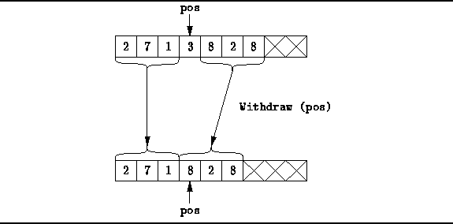

Data Structures and Algorithms
with Object-Oriented Design Patterns in C++
Data Structures and Algorithms
with Object-Oriented Design Patterns in C++The final member function of the ListAsArray class that we will consider is the Withdraw function which takes a const reference to a Position. The desired effect of this function is to remove from the ordered list the item at the specified position.
Figure  shows the way in which to delete
an item from an ordered list which implemented with an array.
All of the items remaining in the list to the right of the deleted item
need to be shifted to the left in the array by one position.
shows the way in which to delete
an item from an ordered list which implemented with an array.
All of the items remaining in the list to the right of the deleted item
need to be shifted to the left in the array by one position.

Figure: Withdrawing an Item from an Ordered List Implemented as an Array
Program gives the implementation of the Withdraw
member function.
As has been the pattern in all of the member functions which take
a const reference to a Position,
that argument is first dynamically cast to a ListAsArray::Pos.
After checking the validity of the position,
all of the items following the item to be withdraw are moved
one position to the left in the array.

Program: ListAsArray Class Withdraw Member Function Definition
The running time of the Withdraw function
depends on the position in the array of the item being deleted
and on the number of items in the ordered lists.
In the worst case, the item to be deleted is in the first position.
In this case, the work required to move the remaining items left is O(n),
where  .
.
 Copyright © 1997 by Bruno R. Preiss, P.Eng. All rights reserved.
Copyright © 1997 by Bruno R. Preiss, P.Eng. All rights reserved.